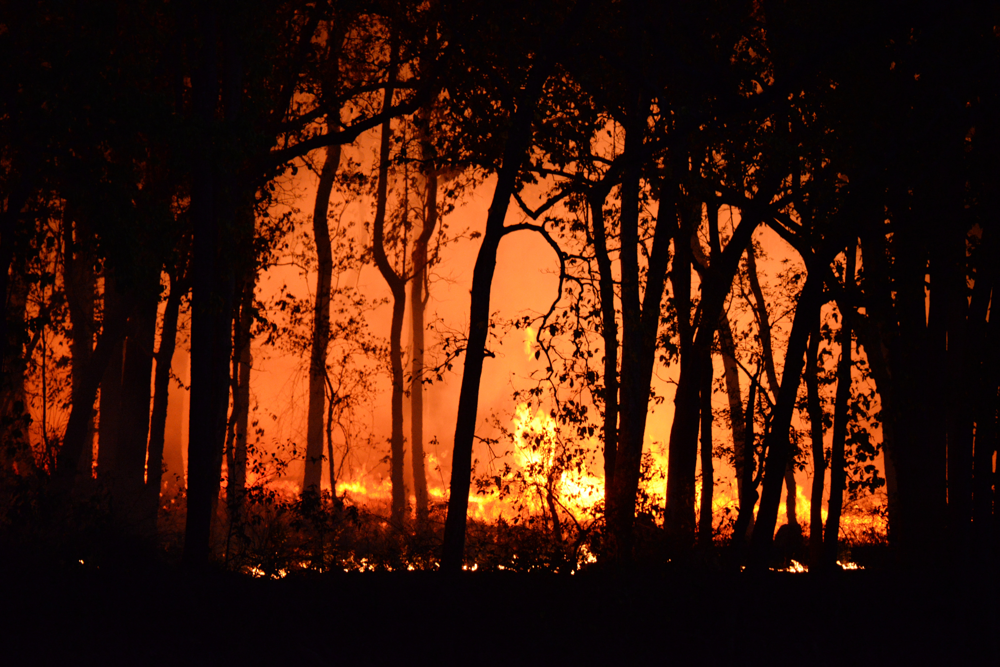
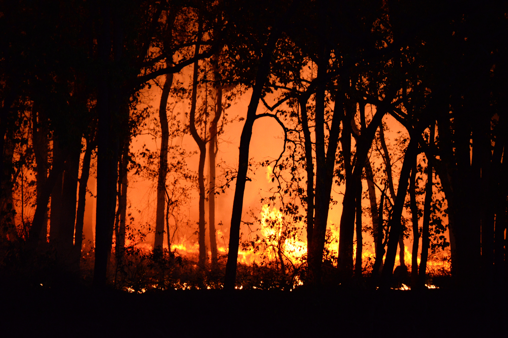

Universal vs U.S. Healthcare
1 in 10 people in the U.S. don't have access to healthcare. In fact,
deaths from lack of health insurance now exceed those caused by many other
common causes of death... such as kidney disease.
Everyone deserves access to proper healthcare.
read more...
Destigmatize Mental Health
Mental health, like physical health, is extremely important to our wellbeing
& quality of life. Perhaps even more important, because when one suffers from
mental illness, one tends to neglect their physical health. Something I, &
millions of others can attest to.
read more...
Climate Change
Scientists attribute the global warming trend observed since the mid-20th century to the human
expansion of the "greenhouse effect" - warming that results when the atmosphere traps heat
radiating from Earth toward space. Certain gases in the atmosphere block heat from eacaping.
read more...